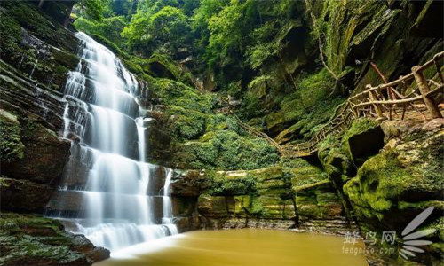
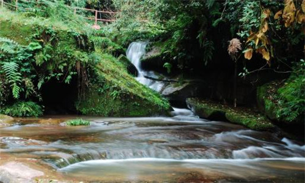
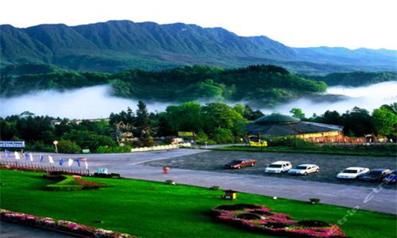
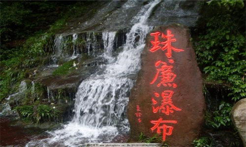
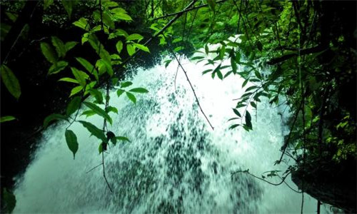
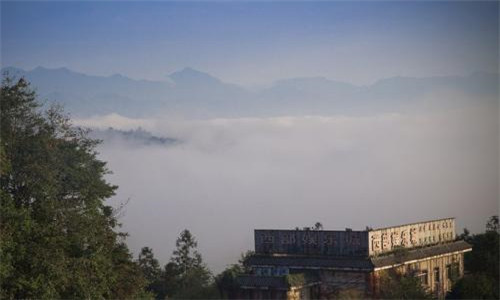
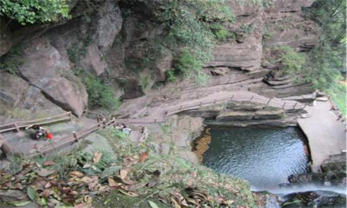
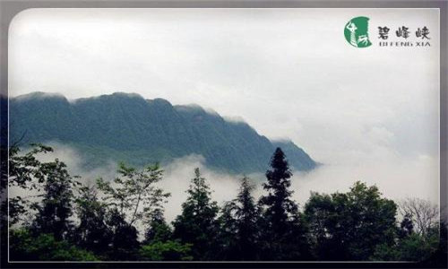

morly旅游网
碧峰峡位于雅安市北8公里，景区为两条峡谷，左峡长7公里，右峡长6公里，呈“V”字形，宽30-70米，海拔700-1971米，峡壁相对高度100-200米。植被、峡景和瀑布是碧峰峡景区的鲜明特色。峡内林木葱郁，苍翠欲滴，峰峦叠嶂，崖壑峥嵘，景色秀雅，是休闲度假，避暑纳凉的绝佳之地。
黄龙峡与碧峰峡相依，峡长4公里，最窄处仅30米，陇西河盘旋于峡谷之中，蜿蜒湍急。两岸峭崖夹峙，苍岩壁立，山高谷深，林木蔽日。峡内有龙女峰、虎啸峰、金猫峰、银鼠峰、小西天峰、状各异，鬼斧神工，形态逼真。悬崖峭壁间，飞瀑垂挂，山泉潺潺。形夏秋傍晚，峡谷深壑中，萤火飞纵，似繁星点点。黄龙峡内巍然屹立着一座山峰，如一尊垂手端坐佛像，五官清晰，面容慈善，佛态可掬，人称天然黄龙巨佛。
 碧峰峡瀑布群
峡内有瀑布、溪潭50余处，有的似银丝飞珠溅玉，有的如白练凌空下泻，或层层叠落，或一注到底。构成了碧峰峡景区一道独特风景线。白龙潭瀑布高30米，宽10多米，从悬崖奔涌而下，溅起漫天水花，如白龙腾飞，水雾扑面，寒气袭人，阴森幽邃，瀑声震撼峡谷，产生强烈共鸣。谷底形成10米深潭，面积约100平方米。
青龙潭瀑布
高约40米，宽6米，瀑布人峡谷丛林中飞流而下，穿数层怪石注入谷底，势如青龙下山。谷底有一深潭，面积100多平方米。
滴水栈道
位于右峡旅游栈道处，溪水从10余米高的裸岩上均匀洒落，游人到此，驻足栈道，仰望滴水岩，水珠飞溅，沁人心脾。女娲池位于景区白龙潭瀑布下，为瀑布多年冲刷而形成的开阔潭池，传说为女娲沐浴之所。长80余米，宽约30米，池周青山绿翠，花香鸟语，池水清澈见底，碧蓝如镜。
 千层岩瀑布
高约100米，宽10米，瀑水悬空飞泻落入崖壁半腰台地茂林之中，再由山腰缓流，沿千层岩而下，无数银丝形成一幅巨大的银帘，如仙姬秀发，飘飘洒洒，常年从层层堆积的陡岩垂泻，形成两梯级台式瀑布。鸳鸯瀑布高30余米，飞泻直下的溪水受高岩阻挡后，将其一分为二，形成左右两道大小不一，气势各异的鸳鸯瀑布。青龙潭瀑布高约40米，宽6米，瀑布人峡谷丛林中飞流而下，穿数层怪石注入谷底，势如青龙下山。谷底有一深潭，面积100多平方米。
鸳鸯瀑布
高30余米，飞泻直下的溪水受高岩阻挡后，将其一分为二，形成左右两道大小不一，气势各异的鸳鸯瀑布。
碧峰寺
位于碧峰峡翠屏山巅，又名翠屏寺，海拔1250米，始建于唐，明代重建。寺庙占地12000平方米，建筑依山就势，围绕中轴线原建有前殿、中殿、大雄殿、会灵阁、后殿等殿堂，但几经兴废，现存观音殿、石牌坊、石狮、香炉等
 女娲池
位于景区白龙潭瀑布下，为瀑布多年冲刷而形成的开阔潭池，传说为女娲沐浴之所。长80余米，宽约30米，池周青山绿翠，花香鸟语，池水清澈见底，碧蓝如镜，是休养生息的好地方。
碧峰峡生态动物园
碧峰峡野生动物园位于空气质量优良、天然野生动物资源丰富的雅安市北八公里处的碧峰峡风景区内，是西南第一家野生动物园，也是全国第一家生态型的野生动物园。它由猛兽车行观赏区和温驯动物步行观光区组成，其中猛兽车行观赏区分为散放狮区、散放熊区、散放虎区；温驯动物步行观光区又分为水生爬行沟、猴谷、百鸟极乐园、鸵鸟散放区、小熊猫散放区、鹦鹉散放区、鳄鱼池、蛇沟和极 品动物区。园内共放养各类野生动物400多种，11000头（只、尾）。
其中有国家一级保护动物三十多种，二级保护动物五十多种，极品珍稀动物四种。园区还设有建筑面积达25000多平方米，并配有1000多个车位，集餐饮、娱乐、住宿、篝火、探险、儿童游乐、五星级别墅、浪漫帐篷为一体的大型游客接待中心，管理中心，饲料配送中心以及动物繁殖基地、疾病预防医疗基地，动物牧草基地、动物表演区及珍稀动物基因库等配套设施。
为配合青少年科普教育，还设有思想馆（科普馆）。为了确保所的动物的安全，动物园还与四川农业大学畜牧系、省林业厅野生动物专家、国内外动物园、国内外各类野生动物研究所等数十家专业机构合作，并拥有包括博士硕士在内的高中级饲养师一百多人。
 内容整理至网络，如有侵权，请联系我们！1255394075@qq.com